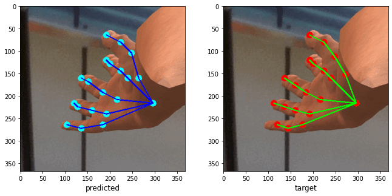

|
Pritom Gogoi – resume page
Bio:
I am an Instrumentation Engg. Graduate from Assam Engineering College, Guwahati. As of now, I am working on developing my skills in deep learning research and embedded development.
Mail - pritom.gogoi101@gmail.com | pritom16-392@aec.ac.in
[ download pdf ]
Social links:
Internships and Training:
IIT, Guwahati | Research Intern
Oct 2020 - Current | Guwahati, AS
I am currently working under Dr. Manas Kamal Bhuyan and Mr. H. Pallab Jyoti Dutta
for developing an algorithm for hand keypoints localization based on Convolutional
Pose Machines and Attention Augmented Convolutional blocks.

update:
github repo will be added soon
University of Warwick, UK | Visiting student
Feb 2020 – Mar 2020 | Coventry, Warwickshire
I received a scholarship under the Winter Overseas Fellowship program and was able
to work under Dr. Layi Alatise and Dr. Jose Ortiz Gonzalez for developing a LabVIEW
test setup for evaluation of the reliability of SiC Power MOSFETs.
IIIT, Guwahati | Summer Intern
Jul 2018 – Sept 2018 | Mirza, AS
Worked under the guidance of Dr. Rakesh Matam to develop an Intelligent Parking
System that detects the presence of a vehicle using an array of sensors and a novel
heuristic algorithm.
Publications
An UAV Assisted Multi-sensor based Smart Parking system
IEEE International Conference on Computer Communications
6-9 July 2020 | Ottawa, Canada - [view paper]
Object Detection and Tracking turret based on Cascade Classifiers and Single Shot Detectors
2020 International Conference on Computational Performance Evaluation
NEHU, Shillong, India - [view paper]
Competitions
Plant Pathology 2021 - FGVC8 | Kaggle
The main objective of the competition was to develop machine learning-based models to accurately classify a given leaf image from the test dataset to a particular disease category, and to identify an individual disease from multiple disease symptoms on a single leaf image.
completed at 62nd position (Top 10%) among 626 participating teams
Projects
Analog Circuit-Block for designing an Artificial Neural Networks
designed a Gilbert's Multiplier circuit for multiplying weights and neuron inputs
based on the multiplier circuit designed by Barrie Gilbert, see paper
view project page on github
Semantic segmentation of leaves using UNet based model
Implementation of Neural Style Transfer
Image Processing Based Object Tracking Turret
Timer-Controlled Automatic Charger
Bitoverflow - Open Source Contribution Event
MOOCS and Certifications
Deep Learning Specialization
Convolutional Neural Networks
Improving Deep Neural Networks: Hyperparameter Tuning, Regularization and Optimization
Neural Networks and Deep Learning | Coursera
Fundamentals Of Digital Image And Video Processing | Coursera
Microprocessors And Microcontrollers | NPTEL
Digital Circuits | NPTEL
Introduction to Biostatistics | NPTEL
|